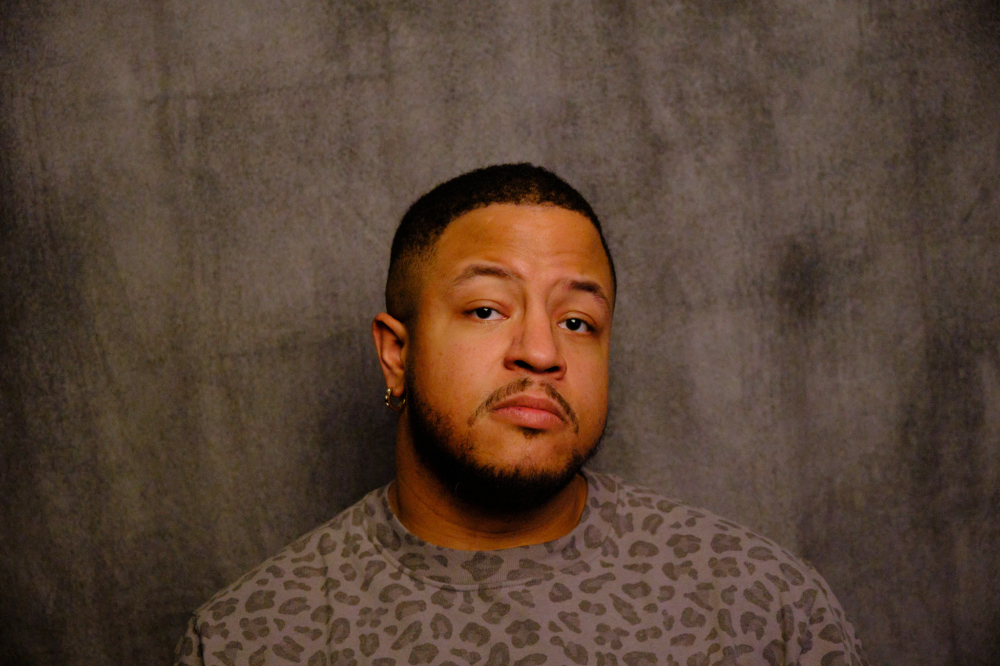

About SagShoots
I'm a Brooklyn-based photographer. Film is my primary medium, with digital work as a complement.
I make images of people in the middle of something: transition, reinvention, recovery, return. My work is rooted in presence and truth, seeing people for who they are so we can imagine what they might become.
I came to photography to rediscover what it meant to feel alive. A practice of noticing the world through streets and landscapes sharpened how I observe and sit with people. Portraiture and candid moments are the center of my work. Street and landscape photography remain personal pursuits that keep my eye honest.
My career in content moderation and policy has shaped how I think about images, what they say, what they leave out, and how they can restore nuance and dignity.
My approach is intentional and collaborative. I create images that feel grounded, expansive, and real. Not just documenting a moment, but reflecting something essential back to you. Images you can return to when you need to remember who you are.